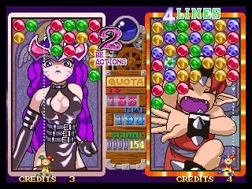
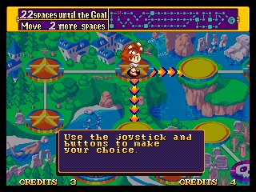

| Jul 23, 2000 | initial revision | |
| Aug 8, 2000 | Evaluated Puyo Puyo and Baku Baku | |
| Aug 25, 2000 | Jake's evaluation of Magical Drop 3 added. |
It is important to see what games are already out there, what they are doing right or not-so-right. This section attempts to do this for some games similar to our own.
Two randomly colored slimes fall at a time, which are linked together. One has a blinking outline, which the other slime rotates about. The slimes land and 'jiggle' into place, after which joins between like colored slimes (either horizontally or vertically) are shown.
When four or more slimes of the same color are beside each other, they blink and than burst into a colorful display, removing them from the playing field.
Gravity takes affect, causing pieces to fall down and possibly create more matches. When 2 or more matches are created one after another, it is consider a combo, which rains down nasty transparent slimes on the other player.
The transparent slimes disappear when a nearby match is made.
The objective isn't to attain a set number of matches, but instead to outlast your opponent. Whoever fills the playing area first loses.
Baku doesn't have many of the visual cues that Puyo Puyo does, such as indicating which piece orbits which piece, or showing potential joins. Combos work in a similar fashion, but drop a random selection of standard pieces on the opponents playing field vs. the special transparent pieces in Puyo Puyo.
There is one special piece in Baku Baku. The BB Coins will remove all pieces of the same type from the playing field. So if you drop it onto a bone piece, all bones will be removed, not just the connected ones.
The Magical Drop series adds a few new twists to this genre of puzzle game by implementing a top-down style of gameplay similar to the more well-known Bust-A-Move (Puzzle Bobble). In addition, you are not given pieces to place, rather you must reorganize the pieces on the screen. Three pieces which are placed together in a vertical line will 'detonate' and will subsequently detonate any adjacent (non-diagonal) pieces of the same color. After a match detonates, reverse gravity causes pieces to fall upwards and fill in the gaps, potentially creating more matches (combos). As the game progresses, additional lines of random pieces are pushed onto the stack from the top, forcing the rest of the playing field down. When it fills up... game over.
There are three modes of play featured. The first two are typical puzzle game
material: Survival Mode and Head to Head. The third is a board game style of
play, where your goal is to get special pieces which appear
at random during each stage. Th more pieces you get, the more spaces you advance
on the board.
Game play mechanics:
There are two buttons: one for grabbing pieces and one for releasing them. The player can grab any number of a single color and hold then until he hits the other button to release them. Sequentially completing a series of matches (a combo) results in big bonuses with respect to the goal of the mode of play.
In addition, there are a number of special pieces. Some are obstacles which require combos or adjacent matches to remove. Others are bonus pieces which can cause a huge 'match' for all the pieces of that color. There are also wildcard pieces which will match up with any color.
Notes: